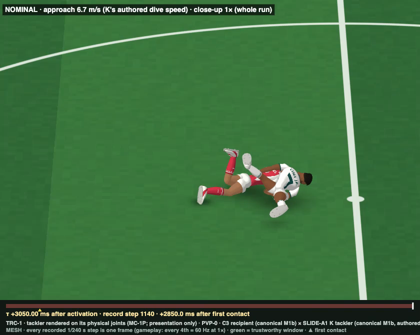
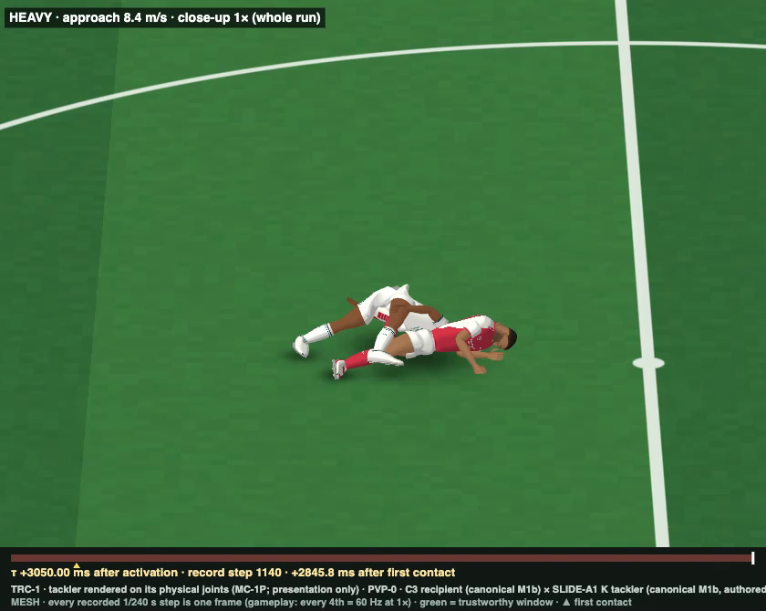

SUPPORT-1: receiver support release
Overnight research run, 13 Oct 2026. Worktree physical-character-v2. The full answers are in support1/S1_REPORT.md. Every video is a matched, synchronised record: one recorded 1/240 s step per frame at 0.25×, every 4th at 1×. Each has a clean view and a diagnostic view (button above it). The reference video could not be opened (it is in a protected macOS temporary folder), so the visual target here is taken from your written description and the literature.
Verdict
On the fourth line: no recipient successor is materially better than the current V2 under matched disturbances. The large visual difference from PVP-0 (sections 3 and 8) is produced by the same unchanged recipient once the disturbance sweeps along the ground instead of pinning from above.
- LIGHT: its boot pressed down on the struck foot, 334 N·s downward over 2 s. The far foot never needed friction: its demand peaked at 0.17 of its load, against 1.2 available.
- NOMINAL: the struck foot was swept 0.52 m, then crushed under the tackler at 7.2 kN.
- HEAVY: the tackler's thigh landed on the far foot, with 2.4 kN downward during a 4.6 kN hit.
Turf friction was not too high. Measured studded-boot traction is higher than V2's μ 1.2 at standing loads, about 1.9–2.7, and rotational traction and ankle compliance are realistic.
Under clean ground-level sweeps the unchanged V2 recipient already produces the whole spectrum: absorbed, displaced and recovered, and fast "sliced-out" falls with both feet swept out from under the centre of mass. An exploratory articulated sliding body at 6.7 m/s reproduces that sliced-out fall in the two-body world.
Four successors were tested. None improved the reaction without a cost:
- C3-SC and C3-UR (controllers) make the struck leg yield more, but turn recoveries into slow falls, because the body cannot step.
- LDG (evidence-fitted traction) makes planted feet harder to sweep.
The deeper missing pieces:
- a tackler that physically slides and carries its momentum along the ground;
- dynamic, single-support recipients (running players);
- stepping and protective responses for the moderate band, where V2 now topples slowly like a mannequin.
1 · Why PVP-0 looked anchored (audit of the PVP-0 records)
Every recipient foot was reconstructed per step from the Jolt manifolds in the existing LIGHT, NOMINAL and HEAVY records: normal load, shear, friction demand against μN, centre of pressure, slip velocity, roll/pitch/yaw, joint torques and the tackler's contact forces. Evidence: S1_PVP0_FEET.json, S1_PVP0_CROSS.json.
| case | struck (left) foot | far (right) foot | tackler pressing DOWN on the recipient's feet (integrated, 0.125–2 s) |
|---|---|---|---|
| LIGHT | slip 31.2 mm · peak load 1144 N · max roll 35.6° · unload never s | slip 0 mm · peak friction demand 0.172 of μ 1.2 · peak load 750 N · roll 0° · unload never s | shank_L ← tackler foot_R: 20.8 N·s down foot_L ← tackler foot_R: 333.8 N·s down |
| NOMINAL | slip 524.3 mm · peak load 7216 N · max roll 54.7° · unload 0.233 s | slip 89.8 mm · peak friction demand 1.2 of μ 1.2 · peak load 1840 N · roll 75.6° · unload 0.767 s | foot_L ← tackler foot_R: 273.7 N·s down |
| HEAVY | slip 1042.7 mm · peak load 3430 N · max roll 60.9° · unload 0.225 s | slip 88.2 mm · peak friction demand 1.2 of μ 1.2 · peak load 3763 N · roll 43.7° · unload 0.313 s | foot_R ← tackler thigh_R: 246.7 N·s down foot_L ← tackler foot_R: 111.8 N·s down |
- LIGHT statue. The far foot was never asked to move: its demand peaked at 0.17 of the 1.2 available. The struck foot was held under the tackler's boot. A friction coefficient as low as 0.2 would still have held the far foot, so friction is not the cause.
- NOMINAL sit-down. Support release did happen: the struck foot was swept 0.52 m, across and past the far foot. It was then crushed under the belly-flopped tackler, peaking at 7.2 kN, while the far foot carried the body. With no step available, the recipient sat down onto the tackler.
- HEAVY flip. The struck foot was swept 1.04 m. The tackler's thigh then landed on the far foot (2.4 kN of the 4.6 kN contact was downward), which rolled 44° onto its edge and was pinned. The recipient pivoted over it and was flipped by the tackler's raised leg.
- Owners, in order: TACKLER CONTACT GEOMETRY (pinning from above, no sweep along the ground); BODY MASS and INERTIA plus legitimately loaded far-foot traction (correct physics); C3 BALANCE CONTROL (cannot step); FOOT/TURF TRACTION only at the margin (the far foot saturated briefly at 1.84 kN / 3.8 kN loads, both inflated by the tackler); not COLLIDER GEOMETRY, not the SOLVER, not ANKLE PASSIVE MECHANICS.


2 · What football and human evidence says
The full review, with sources and verification status, is in support1/research/S1_LITERATURE.md. Three numbers were spot-checked against the saved source texts.
| quantity | evidence | V2 today | conclusion |
|---|---|---|---|
| translational traction (studded boot) | ≈ 1.9–2.7 at 0.2–0.45 kN; 0.91–0.94 at ≈ 2 kN (Blackburn 2012; verified) | μ 1.2 flat | V2 is lower than reality at standing loads, so lowering it is not supported |
| rotational traction | FIFA 25–50 N·m at 450 N; natural grass 28–59 N·m at 580 N | flat 10-piece boot ≈ 42 N·m at 725 N (μ 1) | realistic |
| ankle inversion stiffness | 0.99 ± 0.41 N·m/deg passive (Jain 2016; verified) | 0.51–0.86 N·m/deg (M1b short-range stiffness in standing) | realistic; V2's struck foot rolls about 30° in about 60 ms (≈ 500°/s; real sprains 400–1260°/s) |
| reflex and balance latencies | peroneal 54–69 ms; automatic postural 73–110 ms; step ≥ 300 ms | C3: 100 / 75 / 30 ms channels | release happens passively before C3 can act |
| support state in real tackles | 78 % one foot down, 87 % loading the struck leg (140 elite sprains) | PVP-0: standing, both feet loaded | PVP-0 tested the least sweepable configuration |
| one vs two supports lost | 0 / 28 falls for a one-foot slip, 6 / 28 for a two-foot slip | – | sliced-out = both supports gone (struck foot swept while the other is unloaded or also swept) |
3 · The support-release laboratory: the current recipient under controlled sweeps
This is the PVP-0 recipient exactly (frozen C3 on canonical M1b, frozen contact model), alone in the frozen PVP-1A world (solo mode). It is struck by a recorded dynamic impactor of stated mass, speed, height and direction, parked until launch, with ordinary Jolt contact. Its impulse is ledgered as external. There are 341 runs per candidate, in six families:
- floating bars: 6 directions × 4 heights × 4 masses × 3 speeds;
- ground-sliding bodies;
- force pulses: impulse × duration × height;
- support-loading preloads of ±40 N;
- PVP-0 force replays.
Twin hash 8ef0ed97f8abe751, identical on rerun.
LOW (16 N·s): absorbed. MODERATE (80 N·s): the struck foot slides about 14 cm and he recovers. MODERATE+ (80 N·s at a higher speed): the struck foot is swept 37 cm under the body, the far foot is struck and lifts, and he topples slowly over the swept foot (fall at 0.88 s). HEAVY (160 N·s): both feet swept 0.9 and 0.5 m within 0.25 s while the COM moves 8 cm, a sliced-out fall at 0.32 s.
Where falls begin (current V2, floating-bar grid)
| direction · contact height | lowest momentum that falls (N·s) | lowest momentum that falls in < 0.5 s (N·s) |
|---|---|---|
| L · 5 cm | 80 | 120 |
| L · 15 cm | 48 | 120 |
| L · 30 cm | 80 | 120 |
| L · 45 cm | 80 | 240 |
| PVP · 30 cm | 48 | 120 |
| R · 5 cm | 80 | 120 |
| R · 15 cm | 48 | 120 |
| R · 30 cm | 80 | 120 |
| R · 45 cm | 80 | 240 |
| B · 5 cm | 80 | 120 |
| B · 15 cm | 120 | 120 |
| B · 30 cm | 48 | 240 |
| B · 45 cm | 32 | 120 |
| F · 5 cm | 48 | 160 |
| F · 15 cm | 32 | 160 |
| F · 30 cm | 80 | 120 |
| F · 45 cm | 32 | 120 |
| BL · 5 cm | 48 | 120 |
| BL · 15 cm | 80 | 120 |
| BL · 30 cm | 80 | 120 |
| BL · 45 cm | 40 | 240 |
The classes are measured, not imposed. ABS: no foot moved more than 2 cm and the COM moved less than 5 cm. DISP: displaced and recovered. FAST: fall in under 0.5 s. SLOW: fall at 0.5 s or later. Of the current V2's falls, 132 are sliced (the feet move more than the COM along the disturbance by the time the pelvis has dropped 10 cm), 18 intermediate and 72 hinged (the feet stay while the COM goes).
4 · Other directions, a sliding body, support loading
5 · PVP-0's recorded tackler forces replayed on the lab recipient
The per-step cross-contact force on each recipient body is applied at the recorded point, open-loop, without the tackler body. It is valid while the recipient stays close to PVP-0's motion. FULL replays the forces as recorded. STRIKE keeps only the first 100 ms. HORIZONTAL removes the downward component only.
FULL reproduces the statue: the struck foot moves 7 cm and he recovers. Removing only the downward part releases the foot and he falls. The open-loop push then exaggerates the sweep, but the sign of the effect is unambiguous.
6 · Experimental successors (baseline → hypothesis → change → result → conclusion)
| id | diagnosed mechanism / hypothesis | change (generic, evidence) | result over the matched sweep | conclusion |
|---|---|---|---|---|
| V2 (baseline) | – | the PVP-0 recipient unchanged | ABS 44 · DISP 75 · FAST 115 · SLOW 107 | baseline |
| DIAG_TONIC (diagnostic) | Does C3 artificially preserve support? | M1b tonic intent only, no controller | Large sweeps release support and fall within 10–30 ms of C3's timing. The twin cannot stand, so only the fast cases are valid | No. Support release is passive and complete within about 150 ms, before C3's 100 ms channels act |
| C3-SC | C3 commands an unloaded, sliding or rolled leg as a support (a manufactured pivot) | each leg's stance intent scaled by its own sensed loadability (load, slip, tilt; 50 ms) — load feedback, Dietz & Duysens 2000 | ABS 44 · DISP 66 · FAST 125 · SLOW 106 changes vs V2: DISP→SLOW 10, SLOW→FAST 10, SLOW→DISP 1 struck knee yield 17.203° (V2 15.541°) | Rejected. Slightly more yield and faster falls, but it loses recoveries |
| C3-UR | humans unload a suddenly inverted or everted foot; V2 lacks that response | unloading response to sudden ankle rotation (Konradsen & Ravn 1990): 67 ms channel, graded 85–300°/s, stance intent withdrawn, peroneal 30 % | ABS 44 · DISP 58 · FAST 121 · SLOW 118 changes vs V2: DISP→SLOW 17, SLOW→FAST 6 | Rejected for now. Identical to C3 in ordinary balance (bit-identical standing). In sweeps it mostly turns recoveries into slow falls: unloading needs a step to follow |
| LDG | the contact model lacks load dependence and turf failure | μ(N) = 0.718 + 445/N (Blackburn fit, cap 2.7) + a 3 kN natural-grass divot cap | ABS 64 · DISP 95 · FAST 76 · SLOW 106 changes vs V2: DISP→ABS 19, SLOW→DISP 28, FAST→DISP 11, FAST→SLOW 29, SLOW→FAST 1, DISP→SLOW 1, ABS→DISP 1, SLOW→ABS 2 | More realistic, and planted loaded feet become harder to sweep (boot-height sweeps mostly held). Not a release mechanism |
| LDG + C3-UR | combined | both | ABS 63 · DISP 72 · FAST 84 · SLOW 122 | no added benefit |
Matched comparisons: CURRENT V2 · C3-UR · LDG (identical impactor, start and timing)
7 · Regression gates: the frozen BALANCE-2 B2M battery, scored by the frozen B2F criteria
| candidate | B2F | failed | no-step thresholds fwd / back / left / right (N·s) | 60 s standing hash | determinism |
|---|---|---|---|---|---|
| C3SC | 16/17 | P8 | 12.09 / 20.23 / 26.61 / 27.34 | 433292114f1077e2 | identical |
| C3UR | 16/17 | P8 | 12.09 / 20.23 / 25.88 / 26.61 | bf92ac5126c188af = frozen C3 | identical |
| LDG | 16/17 | P8 | 12.09 / 20.23 / 25.16 / 28.07 | 961f2e9916fd6f05 | identical |
| LDG_C3UR | 16/17 | P8 | 12.09 / 20.23 / 25.16 / 26.61 | 961f2e9916fd6f05 | identical |
| V2 | 16/17 | P8 | 12.09 / 20.23 / 25.88 / 26.61 | bf92ac5126c188af = frozen C3 | identical |
C3's frozen result is 16/17 (P8 only), with thresholds 12.09 / 20.23 / 25.88 / 26.61 and standing hash bf92ac5126c188af. Every candidate keeps 16/17 with P8 its only failure. The lateral thresholds of C3-SC and LDG move but stay inside the band [21.8, 49.8]. Planted-foot traction for ordinary play is not reduced by any candidate; LDG raises it at standing loads.
8 · Exploratory two-body run (clearly labelled; nothing depends on it)
This uses the frozen PVP-0 two-character world with the recipient unchanged. The second body is a passive sliding articulated body: the V2 tackler spec in K's authored slide pose (K t 0.85 s; K's slide floats 85 mm above the turf, so it was lowered onto the turf). It holds the pose only with the frozen PVP-1A SnapshotTone and gets one launch velocity. This is not Astra's tackle.
Left: the K tracker belly-flops and pins the struck foot, so he stays standing over it. Right: the sliding body sweeps both feet, the left 1.0 m and the right 0.75 m, both airborne by 0.2–0.3 s. The pelvis drops 0.92 → 0.55 m by 0.4 s while the COM moves 0.19 m: sliced out, unscripted.
It decelerates quickly on its own boot and body friction, so the sweep becomes a slow topple at 0.73 s.
9 · Does the upper body follow? (finding, not changed)
In the HEAVY lateral sweep the pelvis turns 64° in space within 0.6 s, but the thorax only 13°. The spine bends about 64° and the elbows stay almost rigid (3°). With no controller (diagnostic), the thorax turns 35°, so most of the lag is passive inertia, and C3's trunk-orientation-in-space objective holds the upper body nearer vertical. This contributes to the "upper body not carried" look, and it is a controller design question (righting and protective responses), so it was not changed.
10 · Determinism, CPU, integrity
- Determinism: every candidate's twin and one disturbed run were rerun bit-identically. All regression determinism checks are identical. Clip re-runs reproduce the sweep hashes.
- CPU (recipient alone, instrumented lab plant, ms per 240 Hz step): V2 0.872 · C3SC 0.909 · C3UR 0.895 · LDG 0.831 · LDG_C3UR 0.903. Of that, about 0.2 ms is measurement and about 0.35 ms is the Jolt step.
- Joint limits: the largest anatomical-limit excess is at the swept foot's ankle in inversion, during violent sweeps: about 21° in the lab, 22.5° in the exploratory slider (≈ 57° inversion). That is sprain-range kinematics: football inversion sprains reach a median 70°. PVP-0's maximum was 8.9°. Turf penetration ≤ 11 mm and joint separation ≤ 14 mm (V2). LDG peaks at 39 mm separation in one violent run (flagged).
- No phasing: impactor and slider contacts are ordinary Jolt contacts. Equal-and-opposite is exact in the slider run.
Built by support1/render/s1_review_build.mjs from the committed evidence.